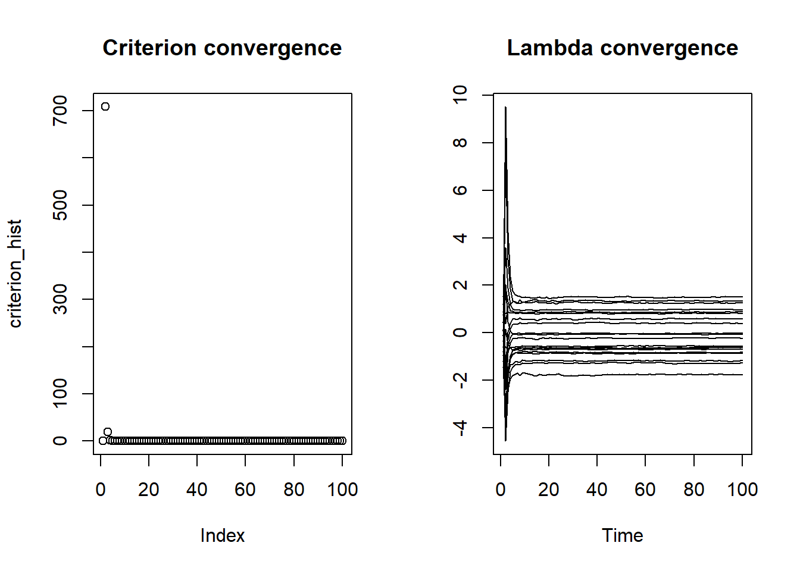
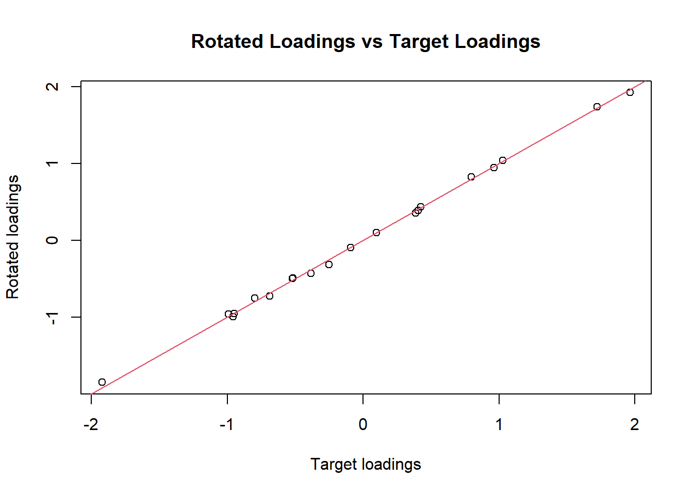
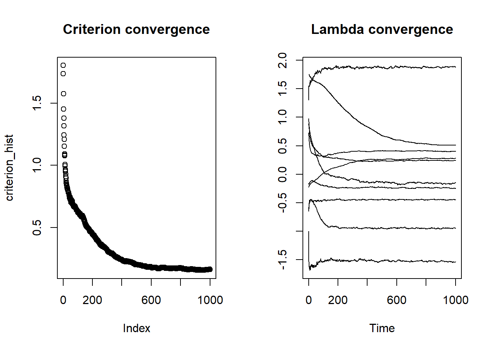
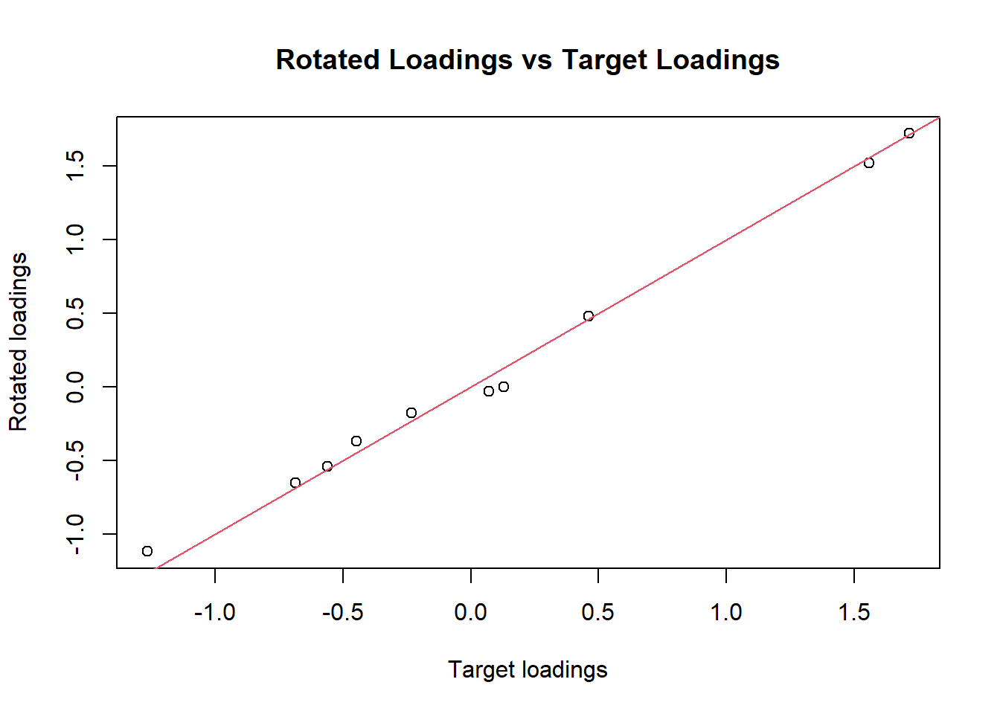

# Generate data from the model
generator <- function(n, Lambda, phi, Z=NULL){
p <- nrow(Lambda)
q <- ncol(Lambda)
# if Z is not given, we generate it
if (is.null(Z)) {
Z <- matrix(rnorm(n*q), n, q)
}
# compute the linear predictor
linpred <- Z %*% t(Lambda)
# generate noise
noise <- matrix(rnorm(n*p), n, p) %*% diag(1/phi) # this is a bad implementation but illustrates well
# generate observations
Y <- linpred + noise
return(list(Y=Y, Z=Z))
}
# Estimate Z from the data and current estimate of Lambda and phi
Z_estimator <- function(Y, Lambda, phi) {
Z_hat = Y %*% diag(1/phi) %*% Lambda %*% solve(t(Lambda) %*% diag(1/phi) %*% Lambda) # this is a bad implementation but illustrates well
return(Z_hat)
}
# compute the random gradient
random_gradient <- function(Y, Lambda, phi) {
n <- nrow(Y)
p <- nrow(Lambda)
q <- ncol(Lambda)
# generate data from the model at current estimate Lambda and phi. this is used to estimate the expectation
data_gen <- generator(n, Lambda, phi)
Y_gen <- data_gen$Y
# for both Y and Y_gen, compute Zhat and Zhat_gen
Zhat <- Z_estimator(Y, Lambda, phi)
Zhat_gen <- Z_estimator(Y_gen, Lambda, phi)
# compute the gradient for Lambda
gradient <- (t(Y) %*% Zhat - t(Y_gen) %*% Zhat_gen)/n
return(gradient)
}Prime Estimator for Factor Analysis: a Minimal (Unoptimized) Example
Consider the factor analysis (FA) model \(F_\theta\) parameterized by \(\theta = (\phi, \Lambda)\) and given by:
\[ Y|Z \sim N(\Lambda Z, \phi)\\ \] \[ Z \sim N(0, I) \] with \(\phi\) diagonal.
The marginal distribution of \(Y\) is thus
\[ Y \sim N(0, \Sigma) \] where \(\Sigma = \Lambda\Lambda^\top + \phi\)
Given data \(\{Y_i\}_{i=1}^n\) from \(F_{\theta}\), our goal is to estimate \(\theta_0\).
The prime estimator:
If \(Z_i\) were known, our estimator for \(\Lambda\) would be obtained by maximizing the (conditional) log-likelihood, with first-order conditions being given as
\[ \frac{1}{n}\sum_{i=1}^n (Y_i - \Lambda Z_i)Z_i^\top = 0 \] We can re-write the above equation as:
\[ \frac{1}{n}\sum_{i=1}^n Y_iZ_i^\top - \frac{1}{n}\sum_{i=1}^n\Lambda Z_iZ_i^\top = 0 \]
which is
\[ \frac{1}{n}\sum_{i=1}^n Y_iZ_i^\top - \frac{1}{n}\sum_{i=1}^n\mathbb E_{Y|Z}\left[Y_iZ_i^\top|Z_i\right] = 0. \]
Since \(Z_i\) are not observed we propose to replace them with an estimate \(Z_i^\ast\). This estimate will be a function of \(Y_i\) and \(\theta\), and so we write \(Z_i^\ast = z(Y_i, \theta)\). The above equation thus becomes
\[ \frac{1}{n}\sum_{i=1}^n Y_iz(Y_i, \theta)^\top - \frac{1}{n}\sum_{i=1}^n \mathbb E_{Y|Z}[Y_iz(Y_i, \theta)^\top|Z_i] = 0. \] We still have one problem: the conditional expectation depends on \(Z_i\), which are not observed. Note however that this equation can be approximated by
\[ \frac{1}{n}\sum_{i=1}^n Y_iz(Y_i, \theta)^\top - \mathbb E_Z \left[\mathbb E_{Y|Z}[Y_iz(Y_i, \theta)^\top|Z]\right] = 0, \] which simplifies into
\[ \frac{1}{n}\sum_{i=1}^n Y_iz(Y_i, \theta)^\top - \mathbb E_Y\left[Y_iz(Y_i, \theta)^\top\right] = 0, \]
which define our Prime estimator. Notice that the expectation part can be estimated at the marginal model.
- Compared to the EM algorithm, we do not need to sample from the posterior distribution of \(Z_i|Y_i\). This is the main advantage (apart from potential computational speedups).
- Compared to variational inference, we additionally have a nice asymptotic theory for our estimator.
Monte Carlo Approximation of the Expectation
In general the expectation does not admit a closed form, but can be estimated by Monte Carlo by simulating \(Y_i\) from its marginal distribution. Generate \(n'\) random \(\{\tilde Z_i\}_ {i=1}^{n'}\) independently from \(N(0, I)\). For simplicity of exposition we will take \(n=n'\). We can approximate the above equation by
\[ \frac{1}{n}\sum_{i=1}^n Y_iz(Y_i, \theta)^\top - \frac{1}{n}\sum_{i=1}^n \mathbb E_{Y|Z}\left[Y_i z(Y_i, \theta)^\top|\tilde Z_i\right] = 0, \]
- Note that this differs from the above in that \(\tilde Z_i\) is now an observed random variate drawn from \(N(0,1)\).
- Other approximations of this expectation can potentially yield better numerical results (e.g. variance reduction methods, gaussian quadrature…). The above method is chosen for its simplicity, universality and ease of exposition.
Equations for the estimate of \(Z_i\)
We still need an estimate for the unobserved \(Z_i\). For simplicity of exposition we take the MAP, the mode of \(Z_i|Y_i\), given for FA by:
\[ Z_i^\ast = z(Y_i, \theta) = \Lambda(\Lambda^\top \phi^{-1}\Lambda + I)^{-1}\phi^{-1}Y_i \] Some notes:
- given \(Y_i\sim F_\theta\), \(Z_i^\ast\) admits \(Z_i^\ast = Z_i + O_p(p^{-1/2})\): the bigger \(p\) is, the closer \(Z_i^\ast\) is to \(Z_i\), and thus the closer the estimating equations of the Prime estimator are from those where \(Z_i\) are known.
- \(Z_i\) can be estimated independently from \(Z_i'\) for all \(i\neq i'\) and thus can easily be paralellized.
- The MAP is not optimized for the FA algorithm: convergence will be relatively slow. We consider it for illustrative purposes only.
- In the FA case, the MAP admits a closed form solution, but we ignore this for now, again to illustrate the stochastic approximation algorithm.
Numerical implementation
Data Generator
Example of Stochastic Algorithm
For now assume \(\phi\) is known. This can be relaxed later.
# Dimensional setting
n <- 1000
p <- 10
q <- 2
# True parameters
Lambda_0 <- matrix(rnorm(p*q), p, q)
phi_0 <- rep(1, p)
# True data
data_0 <- generator(n, Lambda_0, phi_0)
Y_0 <- data_0$Y
SY <- t(Y_0) %*% Y_0 / n
# Initialize model parameters
Lambda <- matrix(rnorm(p*q), p, q) # random initalization...
phi <- phi_0 # assumed known
# Define a convergence criterion
compute_criterion <- function(SY, Lambda, phi) {
# We take the Frobenius' norm of the difference between the observed covariance against its expectation
mean((Lambda %*% t(Lambda) + diag(phi) - SY)^2) # This is computationally bad and should never be computed in production.
}
# Stochastic approximation Algorithm
num_iterations = 100
Lambda_hist <- matrix(nrow=num_iterations, ncol=p*q) # storing the values of Lambda at each iteration.
criterion_hist <- rep(NA, num_iterations)
for (i in 1:num_iterations) {
gradient <- random_gradient(data_0$Y, Lambda, phi)
Lambda <- Lambda + 1/sqrt(i) * gradient # notice the diminishing step size
# Compute the criterion
criterion <- compute_criterion(SY, Lambda, phi)
# Store the iteration results
Lambda_hist[i,] <- as.vector(Lambda)
criterion_hist[i] <- criterion
}
# plotting the results
par(mfrow=c(1,2))
plot(criterion_hist, main="Criterion convergence")
ts.plot(Lambda_hist, main="Lambda convergence")
par(mfrow=c(1,1))Plotting estimated loadings against their true value
To plot the estimated of loadings against its true value, we need to rotate them so that they’re as close as possible. This can be done using a Procrustes rotation.
library(psych) # make sure to install it first
rotate_and_plot_loadings <- function(Lambda, Lambda_target) {
Lambda_rotated <- psych::Procrustes(Lambda, Lambda_target)$loadings
plot(Lambda_target, Lambda_rotated, main="Rotated Loadings vs Target Loadings", xlab="Target loadings", ylab="Rotated loadings")
abline(0,1,col=2)
}
rotate_and_plot_loadings(Lambda, Lambda_0)
FA: Simplifications and Relationship with MLE
Substituting \(Z_i^\ast\) for \(Z_i\) yields
\[ \frac{1}{n}\sum_{i=1}^n Y_iY_i^\top \phi^{-1}\Lambda(\Lambda^\top \phi^{-1}\Lambda + I)^{-1} - \mathbb E_Y\left[Y_iY_i^\top\phi^{-1}\Lambda(\Lambda^\top \phi^{-1}\Lambda + I)^{-1}\right] =0 \] In FA, this expectation admits an analytical expression, using \(E_Y[Y_iY_i^\top ] = \Sigma\), but for the sake of
Given the marginal model, we have
\[ S_{Y_i} \phi^{-1}\Lambda(\Lambda^\top \phi^{-1}\Lambda + I)^{-1} - \Sigma\phi^{-1}\Lambda(\Lambda^\top \phi^{-1}\Lambda + I)^{-1} =0 \] where \(S_{Y_i} = \frac{1}{n}\sum_{i=1}^n Y_iY_i^\top\). This yields
\[ (S_{Y_i}- \Sigma) \phi^{-1}\Lambda(\Lambda^\top \phi^{-1}\Lambda + I)^{-1}=0 \] which is solved when \((S_{Y_i}- \Sigma)\), which coincide with the MLE of factor analysis.
Thus, it turns out that sampling is unnecessary in our case. What’s more, it is possible to tremendously speed up the computations using a small trick. Left for the future.
Estimating \(\phi\)
It turns out that our estimator is consistent for all values of \(\phi\in\mathbb R_+\). Efficiency gains can however be obtained by estimating \(\phi\) appropriately. We can iteratively estimate \(\phi\) as:
\[ \phi = SY- \Lambda\Lambda^\top \]
so that this coincides with the MLE of FA. At the solution, we thus have the MLE (which is the most efficient).
Estimating a Mixture of Gaussian and Binary Random Variable
Consider a GLLVM with mixture of gaussian (known \(\phi\)) and Bernoulli random variables. Note that our gradient remains the same:
\[ \frac{1}{n}\sum_{i=1}^n Y_iz(Y_i, \theta)^\top - \frac{1}{n}\sum_{i=1}^n \mathbb E_{Y|Z}\left[Y_i z(Y_i, \theta)^\top|\tilde Z_i\right]. \] The only thing that changes is potentially the definition of \(z(\theta, Y_i)\). While an implementation of the MAP of \(Z_i|Y_i\) would certainly be beneficial, we show here that our estimator works well even if \(Z_i\) is estimated with bias: we keep it the same as before, i.e. we ignore that . In an implementation for production, we would not ignore it. Our estimator remains consistent (provided it exists) even with a biased estimate of \(Z\). The only change necessary is thus the generator function:
# Generate data from the model
generator_mixture <- function(n, Lambda, phi, gaussian_idx, bernoulli_idx, Z=NULL){
p <- nrow(Lambda)
q <- ncol(Lambda)
# if Z is not given, we generate it
if (is.null(Z)) {
Z <- matrix(rnorm(n*q), n, q)
}
# compute the linear predictor
linpred <- Z %*% t(Lambda)
means <- linpred
# generate noise: will be used for the gaussian random variables
noise <- matrix(rnorm(n*p), n, p) %*% diag(1/phi) # this is a bad implementation but illustrates well
# compute the mean of the Bernoulli using the logistic function
means[,bernoulli_idx] <- 1/(1+exp(-linpred[,bernoulli_idx]))
# Placeholder for the responses
Y <- matrix(nrow=n, ncol=p)
# Generate all gaussian:
Y[,gaussian_idx] <- linpred[,gaussian_idx] + noise[,gaussian_idx]
# Generate all Bernoulli
Y[,bernoulli_idx] <- apply(means[,bernoulli_idx], 2, function(prob) rbinom(n, 1, prob))
# generate observations
return(list(Y=Y, Z=Z))
}
random_gradient_mixture <- function(Y, Lambda, phi, gaussian_idx, bernoulli_idx) {
n <- nrow(Y)
p <- nrow(Lambda)
q <- ncol(Lambda)
# generate data from the model at current estimate Lambda and phi. this is used to estimate the expectation
data_gen <- generator_mixture(n, Lambda, phi, gaussian_idx, bernoulli_idx)
Y_gen <- data_gen$Y
# for both Y and Y_gen, compute Zhat and Zhat_gen
Zhat <- Z_estimator(Y, Lambda, phi)
Zhat_gen <- Z_estimator(Y_gen, Lambda, phi)
# compute the gradient for Lambda
gradient <- (t(Y) %*% Zhat - t(Y_gen) %*% Zhat_gen)/n
return(gradient)
}# Dimensional setting
n <- 1000
p <- 5
q <- 2
gaussian_idx <- 1:3
bernoulli_idx <- 4:5
# True parameters
set.seed(123)
Lambda_0 <- matrix(rnorm(p*q), p, q)
phi_0 <- rep(1, p)
# True data
data_0 <- generator_mixture(n, Lambda_0, phi_0, gaussian_idx, bernoulli_idx)
Y_0 <- data_0$Y
SY <- t(Y_0) %*% Y_0 / n
# Initialize model parameters
Lambda <- matrix(rnorm(p*q), p, q) # random initalization...
phi <- phi_0 # assumed known
# Define a convergence criterion
compute_criterion <- function(SY, Lambda, phi) {
# We take the Frobenius' norm of the difference between the observed covariance against its expectation
mean((Lambda %*% t(Lambda) + diag(phi) - SY)^2) # This is computationally bad and should never be computed in production.
}
# Stochastic approximation Algorithm
num_iterations = 1000
Lambda_hist <- matrix(nrow=num_iterations, ncol=p*q) # storing the values of Lambda at each iteration.
criterion_hist <- rep(NA, num_iterations)
for (i in 1:num_iterations) {
gradient <- random_gradient_mixture(data_0$Y, Lambda, phi, gaussian_idx, bernoulli_idx)
Lambda <- Lambda + 1/sqrt(i) * gradient # notice the diminishing step size
# Compute the criterion
criterion <- compute_criterion(SY, Lambda, phi)
# Store the iteration results
Lambda_hist[i,] <- as.vector(Lambda)
criterion_hist[i] <- criterion
}
# plotting the results
par(mfrow=c(1,2))
plot(criterion_hist, main="Criterion convergence")
ts.plot(Lambda_hist, main="Lambda convergence")
par(mfrow=c(1,1))rotate_and_plot_loadings(Lambda, Lambda_0)
Some notes (c.f. 2nd chapter of my thesis)
- More iterations are necessary because of lack of scaling and not optimal \(Z_i^\ast\).
- The function \(z(\bt, Y)\) should be better, for instance the MAP. The implementation is then harder and less appropriate for a simple demonstration, but the idea is the same.
- We haven’t even centered the Bernoulli random variable.
- The criterion for convergence for the mixture is not optimal: the deviance is more appropriate.
- The gradient should include second-order information to speed up convergence (using an approximation of the Hessian)
- However, instead of scaling the gradient up using the hessian, we can transform the variables with a transformation \(h:\mathbb R^p \to \mathbb R^p\): \[ \frac{1}{n}\sum_{i=1}^n h(Y_i)z(Y_i, \theta)^\top - \frac{1}{n}\sum_{i=1}^n \mathbb E_{Y|Z}\left[h(Y_i) z(Y_i, \theta)^\top|\tilde Z_i\right] = 0, \] which is the implementation of the estimator that has the most merits for applications (because indeed, we do not want to use the hessian).